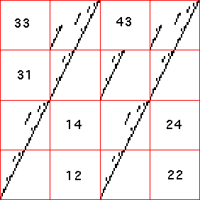
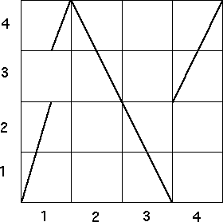

| 3. On the left is the driven IFS with the empty length 2 addresses listed. On the right
is the graph of a function that would produce this IFS under iterated. The bin labels are listed
along both the x- and y-aces. |
| 
 |
| The correspondence between the empty address in the IFS and the forbidden
bin combinations forthe function is |
| 12 | 14 | 22 |
24 | 31 | 33 |
43 |
| 2 → 1 | 4 → 1 | 2 → 2 |
4 → 2 | 1 → 3 | 3 → 3 |
3 → 4 |
|
| For example, that 2 → 1 is forbidden is shown by noting above bin 2 on the x-axis,
no part of the graph lies in bin 1. |
| The driven IFS is determined by forbidden pairs, so the bin boundaries form a Markov
partition of the graph. |